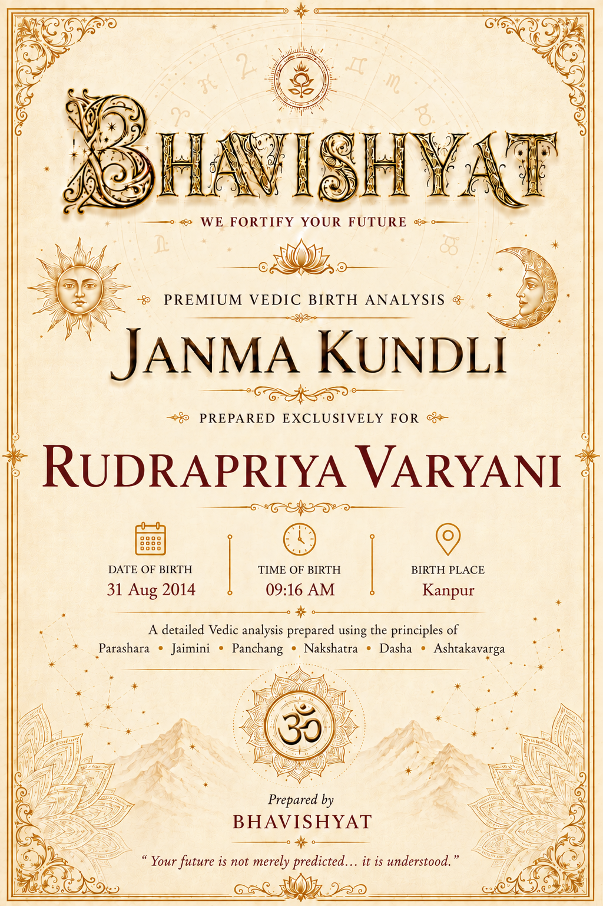
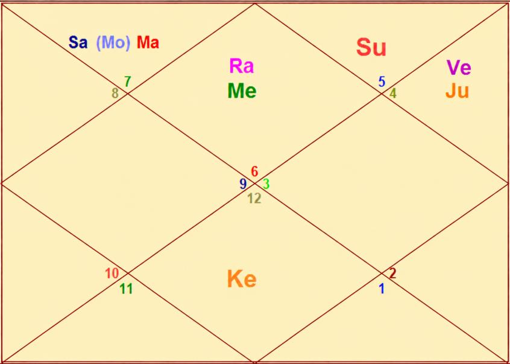

Janma Kundli • Rudrapriya Varyani
Birth Details & Panchang
| Name | Rudrapriya Varyani | Paksha | Shukla |
| Date of Birth | 31 August 2014 | Tithi | Shashthi (6) |
| Time of Birth | 09:16 AM | Nakshatra | Swati |
| Birth Place | Kanpur | Vaar | Sunday |
| Longitude | 80°21' E | Yoga | Brahma |
| Latitude | 26°28' N | Karan | Kaulava |
| Ascendant | Virgo | Asc Lord | Mercury |
| Tithi Lord | Venus | Tithi Deity | Kartikeya |
| Nakshatra Lord | Rahu | Nakshatra Deity | Vayu (Wind God) |
| Yoga Deity | Ashwini Kumara | Karan Deity | Yama |
| Yogi | Mars | Duplicate Yogi | Mercury |
| Abhiyogi | Ketu | Dagdha Rashi | Aries (1), Leo (5) |
Natal Chart (Rashi)

| Planet Distribution | Upper Half Right (Visible Half) — Family, Wealth, Self-care, Investment, Foreign, Friend / Social circle, Spirituality | ||
| Ascendant | Virgo (Kanya) | Moon / Sun Sign | Libra (Tula) / Leo (Simha) |
| Malefic | Mars, Saturn, Moon | Shunya Nakshatra | Shatabhisa, Revati |
| Maraka | Jupiter, Venus | Dasha Balance | 05Y 08M 09D |
| Badhaka | Jupiter | Mangalik | No |
| Birth Dasha | Ra-Ve-Mo (1-6-8) | ||
Janma Kundli • Rudrapriya Varyani
Favourable Influences
| Benefic Years | 19, 22, 26, 28, 31, 35, 37 | ||
| Favourable Days | Wednesday, Friday | ||
| Favourable Planets | Mercury, Venus | ||
| Favourable Signs | Cancer (4), Aquarius (11), Pisces (12) | ||
| Favourable Ratna | Emerald | Favourable UpRatna | Peridot, Jade, Serpentine, Opal |
| Lucky Ratna | Diamond | Favourable Deity | Ganesh |
| Favourable Metal | Bronze | Favourable Colour | Green |
| Direction | North | Favourable Cereals | Moong |
| Favourable Items | Glucose, Ivory, Camphor, Fruit | ||
| Favourable Plant | Coconut Tree | Favourable Temple | Saraswati Temple, Brihadeeswarar Temple |
Planets in Rashi Chart
| Planet | Lordship | Sign | Nakshatra | Nak. Lord | Nak. Count | Nav Tara | Char Karak |
|---|---|---|---|---|---|---|---|
| Sun | 12L | Leo (5) | Purva Phalguni | Venus | 24 N | 7 | Gnatikarak (6H) |
| Moon | 11L | Libra (7) | Swati | Rahu | 1 N | 8 | Putrakarak (5H) |
| Mars | 8L, 3L | Libra (7) | Vishakha | Jupiter | 2 N | 9 | Amatyakarak |
| Mercury | 10L, 1L | Virgo (6) | Uttara Phalguni | Sun | 25 N | 4 | DaraKarak (7H) |
| Jupiter | 4L, 7L | Cancer (4) | Pushya | Saturn | 21 N | 2 | Matrikarak (4H) |
| Venus | 9L, 2L | Cancer (4) | Ashlesha | Mercury | 22 N | 6 | Atmakarak (Life) |
| Saturn | 5L, 6L | Libra (7) | Vishakha | Jupiter | 2 N | 3 | Bhratrikaraka (3H) |
| Rahu | — | Virgo (6) | Chitra | Mars | 27 N | 1 | — |
| Ketu | — | Pisces (12) | Revati | Mercury | 13 N | 5 | — |
| Exalted Planet(s) | — | Debilitated Planet(s) | — |
| Combust Planet(s) | — | Retrograde Planet(s) | — |
Sarvastakvarga & Houses
| Very Strong (35+) | 9H | ||
| Strong (31-35) | 6H, 10H, 11H, 12H | ||
| Above Average (28-30) | 3H, 4H | ||
| Below Average (24-27) | 5H, 7H | ||
| Weak (21-23) | 2H, 8H | ||
| Very Weak (<21) | 1H | ||
Janma Kundli • Rudrapriya Varyani
Houses in Rashi Chart
| House | Sign | Planets | SAV | Lords | Aspect |
|---|---|---|---|---|---|
| 1H | Virgo (6) | Mercury, Rahu | 19 | 10L, 1L | — |
| 2H | Libra (7) | Moon, Mars, Saturn | 21 | 11L; 8L, 3L; 5L, 6L | — |
| 3H | Scorpio (8) | — | 30 | — | Jupiter, Ketu |
| 4H | Sagittarius (9) | — | 29 | — | Saturn |
| 5H | Capricorn (10) | — | 26 | — | Mars, Rahu |
| 6H | Aquarius (11) | — | 31 | — | — |
| 7H | Pisces (12) | Ketu | 24 | — | Jupiter |
| 8H | Aries (1) | — | 23 | — | — |
| 9H | Taurus (2) | — | 35 | — | Mars, Rahu |
| 10H | Gemini (3) | — | 34 | — | — |
| 11H | Cancer (4) | Jupiter, Venus | 33 | 4L, 7L; 9L, 2L | Saturn, Ketu |
| 12H | Leo (5) | Sun | 32 | 12L | — |
Bhinnashtak Varga (BAV)
| Sign | Sa | Ju | Ma | Su | Ve | Me | Mo | Ra |
|---|---|---|---|---|---|---|---|---|
| 6 | 3 | 5 | 1 | 1 | 4 | 3 | 2 | 4 |
| 7 | 0 | 5 | 3 | 2 | 3 | 4 | 4 | 4 |
| 8 | 3 | 4 | 3 | 6 | 5 | 5 | 4 | 2 |
| 9 | 6 | 4 | 4 | 4 | 4 | 3 | 4 | 8 |
| 10 | 0 | 4 | 4 | 4 | 5 | 5 | 4 | 2 |
| 11 | 5 | 6 | 3 | 3 | 5 | 4 | 5 | 5 |
| 12 | 4 | 4 | 1 | 3 | 4 | 2 | 6 | 2 |
| 1 | 1 | 5 | 3 | 3 | 3 | 4 | 4 | 3 |
| 2 | 4 | 6 | 5 | 5 | 6 | 6 | 3 | 4 |
| 3 | 5 | 4 | 5 | 6 | 4 | 6 | 4 | 2 |
| 4 | 3 | 4 | 4 | 5 | 5 | 7 | 5 | 3 |
| 5 | 5 | 5 | 3 | 6 | 4 | 5 | 4 | 4 |
Janma Kundli • Rudrapriya Varyani
Vimshottari Dasha
Maha Dasha
| Dasha Lord | From | To |
|---|---|---|
| Rahu | 12-Apr-2002 | 11-Apr-2020 |
| Jupiter | 11-Apr-2020 | 10-Apr-2036 |
| Saturn | 10-Apr-2036 | 11-Apr-2055 |
| Mercury | 11-Apr-2055 | 10-Apr-2072 |
| Ketu | 10-Apr-2072 | 11-Apr-2079 |
| Venus | 11-Apr-2079 | 11-Apr-2099 |
| Sun | 11-Apr-2099 | 11-Apr-2105 |
| Moon | 11-Apr-2105 | 12-Apr-2115 |
| Mars | 12-Apr-2115 | 11-Apr-2122 |
Antar Dasha (Jupiter Maha Dasha)
| AD Lord | From | To |
|---|---|---|
| Jupiter | 11-Apr-2020 | 30-May-2022 |
| Saturn | 30-May-2022 | 10-Dec-2024 |
| Mercury | 10-Dec-2024 | 18-Mar-2027 |
| Ketu | 18-Mar-2027 | 22-Feb-2028 |
| Venus | 22-Feb-2028 | 23-Oct-2030 |
| Sun | 23-Oct-2030 | 11-Aug-2031 |
| Moon | 11-Aug-2031 | 10-Dec-2032 |
| Mars | 10-Dec-2032 | 16-Nov-2033 |
| Rahu | 16-Nov-2033 | 10-Apr-2036 |
Pratyantar Dasha (Mercury Antar Dasha)
| P. Dasha | From | To |
|---|---|---|
| Mercury | 10-Dec-2024 | 06-Apr-2025 |
| Ketu | 06-Apr-2025 | 25-May-2025 |
| Venus | 25-May-2025 | 10-Oct-2025 |
| Sun | 10-Oct-2025 | 20-Nov-2025 |
| Moon | 20-Nov-2025 | 28-Jan-2026 |
| Mars | 28-Jan-2026 | 17-Mar-2026 |
| Rahu | 17-Mar-2026 | 19-Jul-2026 |
| Jupiter | 19-Jul-2026 | 07-Nov-2026 |
| Saturn | 07-Nov-2026 | 18-Mar-2027 |
Janma Kundli • Rudrapriya Varyani
Nav Tara Sequence
| Planet | Chara Karak | House | Lordship | Strength | Nakshatra | Lord | Placement |
|---|---|---|---|---|---|---|---|
| Rahu | — | 1H | — | Very Weak (<21) | Chitra | Mars | 1H |
| Jupiter | Matrikarak (4H) | 11H | 4L, 7L | Strong (31-35) | Pushya | Saturn | 11H |
| Saturn | Bhratrikaraka (3H) | 2H | 5L, 6L | Weak (21-23) | Vishakha | Jupiter | 2H |
| Mercury | DaraKarak (7H) | 1H | 10L, 1L | Very Weak (<21) | Uttara Phalguni | Sun | 1H |
| Ketu | — | 7H | — | Below Avg (24-27) | Revati | Mercury | 7H |
| Venus | Atmakarak (Life) | 11H | 9L, 2L | Strong (31-35) | Ashlesha | Mercury | 11H |
| Sun | Gnatikarak (6H) | 12H | 12L | Strong (31-35) | Purva Phalguni | Venus | 12H |
| Moon | Putrakarak (5H) | 2H | 11L | Weak (21-23) | Swati | Rahu | 2H |
| Mars | Amatyakarak | 2H | 8L, 3L | Weak (21-23) | Vishakha | Jupiter | 2H |
Birth Chart Nav Tara Chakra
| Rahu (Janam) | 1 | Moon | 10 | 19 | ||
| Jupiter (Sampat) | 2 | Mars, Saturn | 11 | 20 | ||
| Saturn (Vipat) | 3 | 12 | 21 | Jupiter | ||
| Mercury (Kshem) | 4 | 13 | Ketu | 22 | Venus | |
| Ketu (Pratyari) | 5 | 14 | 23 | |||
| Venus (Sadhak) | 6 | 15 | 24 | Sun | ||
| Sun (Nidhan) | 7 | 16 | 25 | Mercury | ||
| Moon (Mitra) | 8 | 17 | 26 | |||
| Mars (Ati Mitra) | 9 | 18 | 27 | Rahu |
Important Saturn Transits
| 1st Sade Sati | 31 Aug 2014 – 26 Oct 2017 | ||
| 2nd Sade Sati | 22 Oct 2038 – 08 Dec 2046 | ||
| 3rd Sade Sati | 30 Aug 2068 – 12 Oct 2076 | ||
| Kantak Shani | 24 Jan 2020 – 29 Apr 2022; 12 Jul 2022 – 17 Jan 2023 | ||
| Ashtam Shani | 03 Jun 2027 – 20 Oct 2027; 23 Feb 2028 – 17 Apr 2030 | ||
Janma Kundli • Rudrapriya Varyani
Other Important Transits
| Type | Planet | House | SAV | From | To |
|---|---|---|---|---|---|
| Good | Saturn | 4H | 29 | 26 Jan 2017 | 24 Jan 2020 |
| Saturn | 6H | 31 | 29 Apr 2022 | 12 Jul 2022 | |
| Saturn | 6H | 31 | 17 Jan 2023 | 29 Mar 2025 | |
| Jupiter | 9H | 35 | 01 May 2024 | 14 May 2025 | |
| Jupiter | 12H | 32 | 31 Oct 2026 | 25 Jan 2027 | |
| Jupiter | 12H | 32 | 26 Jun 2027 | 26 Nov 2027 | |
| Jupiter | 12H | 32 | 28 Feb 2028 | 24 Jul 2028 | |
| Good | Rahu | 4H, 3H | 29, 30 | 23 Jun 2028 | 08 Aug 2031 |
| Challenging | Rahu | 8H | 23 | 12 Oct 2022 | 30 Oct 2023 |
| Ketu | 12H | 32 | 18 May 2025 | 05 Dec 2026 | |
| Saturn | 8H | 23 | 03 Jun 2027 | 20 Oct 2027 | |
| Saturn | 7H | 24 | 20 Oct 2027 | 23 Feb 2028 | |
| Saturn | 8H | 23 | 23 Feb 2028 | 17 Apr 2030 | |
| Rahu | 2H | 21 | 31 Jul 2031 | 16 Feb 2033 |
Lal Kitab Birth Chart
| HN | Rashi | Planets | Varshphal Yr 13 31 Aug 2026 – 30 Aug 2027 |
Varshphal Yr 14 31 Aug 2027 – 30 Aug 2028 |
|---|---|---|---|---|
| 1 | Virgo (6) | Mercury, Rahu | Mercury, Rahu | Moon, Mars, Saturn |
| 2 | Libra (7) | Moon, Mars, Saturn | — | — |
| 3 | Scorpio (8) | — | — | — |
| 4 | Sagittarius (9) | — | Sun | Mercury, Rahu |
| 5 | Capricorn (10) | — | Moon, Mars, Saturn | — |
| 6 | Aquarius (11) | — | — | — |
| 7 | Pisces (12) | Ketu | Ketu | — |
| 8 | Aries (1) | — | — | Ketu |
| 9 | Taurus (2) | — | Jupiter, Venus | Sun |
| 10 | Gemini (3) | — | — | Jupiter, Venus |
| 11 | Cancer (4) | Jupiter, Venus | — | — |
| 12 | Leo (5) | Sun | — | — |
Janma Kundli • Rudrapriya Varyani
Part B — Panchang Insights
| Tithi — Shukla Shashthi | Favours start, growth, new beginnings and gains. Makes her righteous, leadership-oriented and warrior-like. Supports roles of doctor, judge or military. Encourages service, protection and initiative. She should avoid unnecessary quarrels. |
| Moon | The natal Moon is not very powerful — around 35% luminous — and receives malefic influences. Advisable for the native and her mother to perform Ganga Snan periodically; this dilutes Saturn’s malefic influence on the Moon. Rudrabhishek every birthday is recommended. Cultivates seriousness and caution. |
| Vaar — Sunday | Makes her ambitious, authoritative, health-conscious and creative. She should manage pride carefully — avoid ego-hurt and humiliation. |
| Nakshatra — Swati | Independent, open-minded and lucky. Good at sales, business and marketing. Profession may differ from family or father. Extended / big family; street-smart; fond of travelling; collects unique mugs and bottles. Good property yoga and indication of a beautiful house. |
| Yoga — Brahma | Favours specialisation, skilled hands (including sports) and healing energy. |
| Karan — Kaulava | Friendly, cooperative and social. Favours negotiation and teamwork; success comes through collaborative work. |
| Dagdha Rashi — 1, 5 | Offer water at sunrise. |
Janma Kundli • Rudrapriya Varyani
Rashi Chart Overview
| Planet Distribution | Upper Half Right (Visible Half). Focus areas: Family, Wealth, Self-care, Investment, Foreign, Friend / Social circle and Spirituality. |
| Kal Sarp | There is no Kal Sarpa Dosh in the chart. |
Nature, Personality & Appearance — Ascendant Virgo
| Core Nature | Practical, analytical, intelligent, detail-oriented, perfectionist, organized, critical thinker, disciplined, service-minded, problem-solver and sharp-minded. |
| Physical Features | Quick, active walk; appears younger; straight nose; thin or shrill voice; mark on throat or thighs. |
| Lifestyle | Drawn to libraries, clean surroundings, gardens, books and planning; dislikes disorder and laziness. Suits healthcare, research, administration and precision roles. |
| More About Ascendant | Ingenious and analytical; critical of others’ faults; methodical with detail; cautious, prudent, economical, diplomatic and shrewd. Inclines toward housekeeper, mathematician, physician or occult paths. Guard digestive troubles (including dysentery risk). Prefers seva-bhav lifestyle. |
| Weakness | Over-critical, anxious and prone to perfectionist stress. |
Moon Sign — Libra
| Emotional Nature | Independent and open-minded; seeks justice, harmony, love and peace. Changes residence frequently; enjoys travelling. High standard of living — dress, furniture, vehicles and comforts. May have another name of a god or goddess. Good trader; popular; business partner, salesman or liaison. Emotionally balanced, relationship-oriented and aesthetic; seeks fairness. |
Janma Kundli • Rudrapriya Varyani
Impact of Planetary Placements
- Doesn’t communicate much; Sun supports skill work (programming, design, project management, data, creativity). Loneliness or distant / foreign themes possible.
- Money-minded with wealth yoga; health, wealth and education support. Mother and siblings support; good trainer; prefers staying above ground floor.
- Wealth and property yoga; restaurant / food business yoga; supports siblings; elder in the family. Fast or harsh speech; kitchen always operational. Careful of speech troubles; gums / teeth issues.
- Youthful, energetic, intelligent, business-minded and a fun-lover; multiple income; event-manager aptitude. Career ups and downs; loves to serve; never accepts mistakes; outspoken; throat ailments. Father may face challenges around her ages 17 and 34.
- Wealth yoga, name and fame, learned friends; loves to share; spendthrift; religious travel for wealth; multiple earnings.
- Big social circle, lots of wealth, dominating in relationship.
- Delays in savings; shrewd; money stuck when lent — avoid credit. Coal / machinery / property themes; unhealthy eating habits.
- Fickle-minded, overthinking, reactive; frequent health issues. Career growth away from birthplace; lots of ideas, harder execution; sharp-minded.
- Losses during travel; beware opposite-gender traps.
- Fond of spicy food but lesser taste / diet restriction.
Janma Kundli • Rudrapriya Varyani
Impact of Planetary Placements (contd.)
Planetary Combinations
- Good for vehicles and properties; seriousness with negative / chaotic thoughts balanced by detailed research aptitude.
- Place or separation in family after birth; prolonged health issues to mother possible; eyesight issues.
- Living away is favourable; strong analytical skills; wealth yoga; manufacturing / machinery support.
- Career priority over relationship; self-branding and perseverance support rise.
- Foreign career connections; wealth as family blessing; lending / banking and industry / manufacturing themes.
- Ancestral wealth and finance / banking aptitude; savings disputes possible; teeth / gum / throat caution.
- Inherited property; parents’ longevity; Sun Dasha may bring alone time or distant residence.
Janma Kundli • Rudrapriya Varyani
12 Houses of Rashi Chart
- 1H: Analytical, critical, practical, observant, perfectionist; cleanliness, competitive, auditing, micro-management, dual nature; young-looking. Childhood health then fitness; quarrelsome; sports. Financial gain after birth in family; arguments / speech; avoid judging. Seva-bhav lifestyle remedy; service roles.
- 2H: Wealth post marriage; joint assets via partner; fancy food; good face / speech; family; finance management.
- 3H: Secretive communication; empty / old building near birth; sibling struggle; short-travel troubles; negative thoughts.
- 4H: Lucky for property / home; comfort; spiritual home atmosphere; long-term property goals.
- 5H: Extra effort for education; discipline and persistence needed.
- 6H: Intuitive public dealing; pets favourable; friends may cause disputes; wins over enemies / competition.
- 7H: Losses from contracts; foreign partnership loss; spendthrift on partner; secret relationships; partner distant / different culture.
- 8H: Impulsive decision losses; mind drawn to secret matters.
- 9H: Wealth through knowledge, guru, travel and religion; stable spiritual beliefs.
- 10H: Communication key in career (sales / marketing / ads); multiple work; active, impatient; confused career decisions.
Sarvashtakvarga — Yearly Outlook
| Challenging Years | 3, 39 | ||
| Good Months of the Year | May – July, August – September, November – January | ||
| Auspicious Months (ceremony, puja etc.) | February – March, May – June | ||
| Challenging Months of the Year | January – February, April – May, September – November | ||
| Favourable for Starting New Education | February – March, May – June, July – August | ||
| Lucky People for Native | Cancer (4), Aquarius (11), Pisces (12) | ||
| Unfavourable People for Native | Aries (1), Virgo (6) | ||
| Aptitude | Good analytical skills; win competitions; good wealth & investment; support of luck | ||
| Favourable Direction for Opening a Bank Account | West of birth place / residence | ||
| Key Growth Window | Jupiter Maha Dasha (May 2020 – May 2036) — good for education and learning | ||
Janma Kundli • Rudrapriya Varyani
12 Houses of Rashi Chart (contd.)
- 11H: Income fluctuation; emotional attachment to elder sibling / friends; emotional trauma from friends; emotions affect earning.
- 12H: Ego losses; education / hobby spend; image-maintain spend; authority loss via sickness / disputes; fame via charity / distant places; charity linked to fame.
- Focus on self, health and looks; independent; wealth + education yoga; speculation / multiple income sources.
- Luck and wish fulfilment; long travels for earning; father / mentor support; higher education leads to income.
- Lucky for father; property grace to mother; business / collaboration; rise with perseverance; self-branding.
- Foreign career connections; wealth as family blessing; lending / banking; industry / manufacturing; ancestral wealth.
- Finance / banking aptitude; savings disputes; teeth / gum / throat caution; inherited property; parents’ longevity.
- Sun Dasha may bring alone time or distant residence.
Near-Term Dasha Notes
- Jupiter–Mercury (Dec 2024 – Mar 2027): supports education, skills and communication — favourable study window.
- Jupiter–Ketu (Mar 2027 – Feb 2028): watch health and focus; spiritual interest may deepen.
- Jupiter Maha Dasha through Apr 2036 supports education, learning and overall growth.
Janma Kundli • Rudrapriya Varyani
Karmic Remedies
- Become less critical and judgemental; don’t use the analytical mind where emotional understanding is required.
- Avoid gifts of electrical / electronic items; Donate food to ants.
- Throw away unused / bad Mixer / Juicer / Grinder or press.
- Avoid Non-Veg (Chicken) and Liquor.
- Wear Gold chain.
- Donate Mustard Oil in Temple.
- Avoid Mustard Oil especially on head (money stuck when lent; never work on credit).
- Offer Food to Red Face Monkey.
- Never donate Pen / Pencils / Stationery.
- Throw away Broken Umbrella at home.
- Don’t keep Old Paint Box at Home.
Abbreviations
A Sacred Dedication
With Love & Blessings
for Rudrapriya Varyani's journey ahead
यस्मान्नोद्विजते लोको लोकान्नोद्विजते च यः।
हर्षामर्षभयोद्वेगैर्मुक्तो यः स च मे प्रियः॥ १५॥
जिससे संसार उद्विग्न नहीं होता और जो स्वयं संसार से उद्विग्न नहीं होता, तथा जो हर्ष, अमर्ष, भय और उद्वेग से मुक्त है — वह मुझे प्रिय है।
"He by whom the world is not agitated and who cannot be agitated by the world, who is freed from joy, envy, fear and anxiety — he is dear to Me."
— Bhagavad Gita, Chapter 12, Verse 15
May Rudrapriya grow the quiet strength of a clear and kind mind — precise without harshness, independent without unrest. May her Virgo gifts serve with seva-bhav, her Libra heart keep harmony, and may she walk her path unshaken, becoming ever dear through calm courage and compassionate wisdom.